핵심 요약
SLAM-Former는 하나의 transformer를 streaming frontend와 global backend로 함께 쓰고, backend가 정제한 cache를 다음 frontend update에 다시 주입하는 dense SLAM 구조다.
SLAM-Former는 하나의 transformer를 streaming frontend와 global backend로 함께 쓰고, backend가 정제한 cache를 다음 frontend update에 다시 주입한다.
Unified Transformer
frontend tracking과 backend refinement를 하나의 shared backbone으로 처리.
Cache Sharing
backend가 정제한 map representation을 frontend KV cache로 다시 전달.
Training Modes
frontend, backend, cache-sharing 상황을 세 가지 mode로 함께 학습.
Dense SLAM Evidence
tracking, reconstruction, cooperation ablation, runtime을 함께 검증.
흥미로운 점은 global correction을 후처리로 떼어놓지 않고, shared cache를 통해 다음 streaming update의 일부로 만든다는 점이다.
분리된 모듈
해석성은 높지만 모듈 경계에서 오차가 누적될 수 있음.
feed-forward geometry
reconstruction은 강하지만 긴 stream에서 과거 state를 다시 정제하기 어려움.
shared token memory
streaming frontend와 global backend가 같은 cache/map-token 표현 위에서 작동.
논문 상세 정리
이하에서는 배경지식, notation, 보조 유도까지 포함해 논문의 세부 내용을 살펴본다.
Problem: 왜 SLAM을 하나의 transformer로 묶는가
SLAM-Former의 출발점은 dense monocular SLAM이 여전히 여러 모듈의 조합으로 동작한다는 점이다. tracking, global optimization, mapping을 따로 설계하면 각 모듈은 강해질 수 있지만, 앞단의 pose drift나 map inconsistency가 뒤쪽 모듈로 전달되면서 전체 system의 일관성이 흔들릴 수 있다.
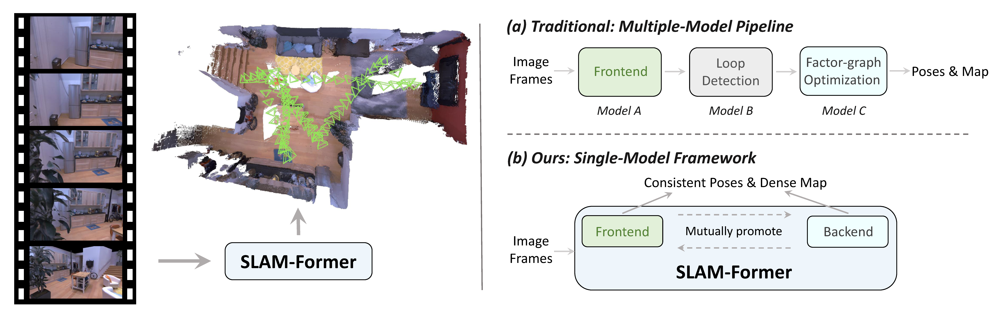
논문은 SLAM을 여러 module의 순차 조립이 아니라 token memory를 갱신하는 sequential inference 문제로 다시 잡는다.
frontend와 backend 사이의 interface가 고정되어 error correction이 제한됨.
한 번 예측한 과거 state를 긴 sequence에서 다시 정제하기 어려움.
frontend state와 global backend state를 같은 cache 표현으로 순환.
Related work 세부 흐름 보기
Related Work는 modular dense SLAM, feed-forward 3D foundation model, streaming reconstruction 사이에서 SLAM-Former가 어디에 놓이는지를 설명한다.
DROID-SLAM처럼 optical flow와 bundle adjustment를 결합하거나, NeRF/3DGS rendering objective를 쓰는 방식이 발전.
DUSt3R, Fast3R, VGGT, Pi3는 image set에서 geometry를 바로 예측하지만 streaming state update는 별도 설계 필요.
Spann3R, CUT3R, LONG3R, StreamVGGT, Stream3R는 sequential 처리 능력을 키웠지만 global revisit은 제한적.
전통 SLAM의 global optimization 역할을 backend transformer의 map-token full attention으로 대체.
Mechanism: frontend와 backend는 어떻게 같은 transformer를 공유하나
핵심은 하나의 transformer backbone을 두 가지 mode로 사용하는 것이다. frontend는 새 frame을 순차적으로 처리하며 cache를 쌓고, backend는 누적된 map token 전체를 full attention으로 다시 보면서 global consistency를 복구한다.
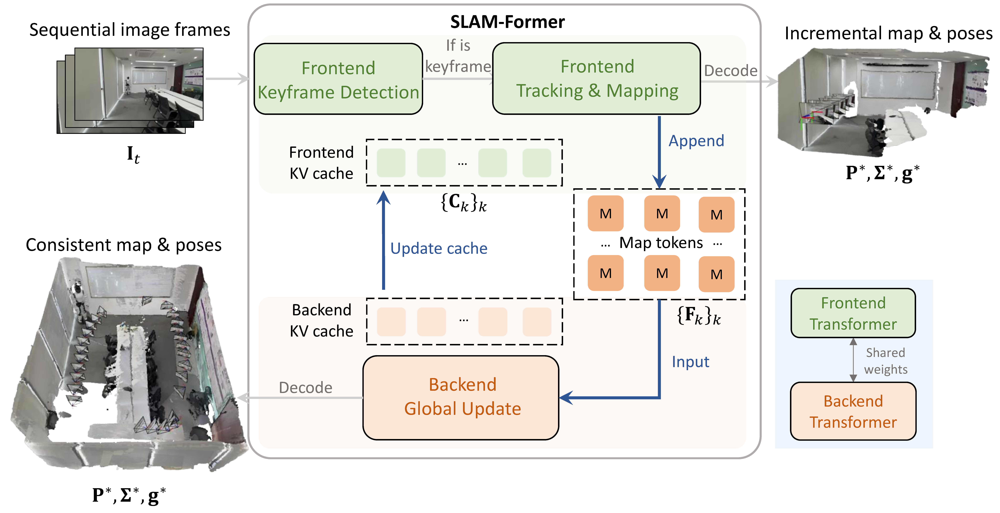
구조는 frontend conditional update → map token memory → backend refinement → cache sharing으로 읽는 것이 가장 자연스럽다.
| 단계 | 역할 | 핵심 표현 |
|---|---|---|
| Frontend | 현재 frame을 keyframe cache 조건으로 처리 | \(f_{\mathrm{fn}}\) |
| Memory | keyframe feature를 map token set에 누적 | \(\mathcal{M},\mathcal{S}\) |
| Backend | map token 전체를 full attention으로 정제 | \(f_{\mathrm{bn}}\) |
| Sharing | 정제된 cache를 다음 frontend update에 주입 | \(C_{\mathcal{M}}\) |
현재 frame \(I_t\)는 keyframe cache \(\{C_k\}_{k\in\mathcal{S}}\)를 조건으로 처리된다. 결과로 현재 frame feature \(F_t\)와 cache \(C_t\)가 생성되고, pose head가 camera pose를 예측한다.
새 keyframe은 map token set \(\mathcal{M}\)과 keyframe index set \(\mathcal{S}\)에 추가된다. backend는 누적된 map token을 한꺼번에 attention하여 refined map token을 만들고, 이 결과가 다시 frontend cache로 들어간다.
논문은 inference에서 frontend와 backend가 번갈아 작동한다는 점을 반영해 세 가지 training mode를 둔다. frontend-only, backend refinement, cache sharing 상황을 모두 학습하도록 만들어 mode 전환으로 생기는 mismatch를 줄인다.
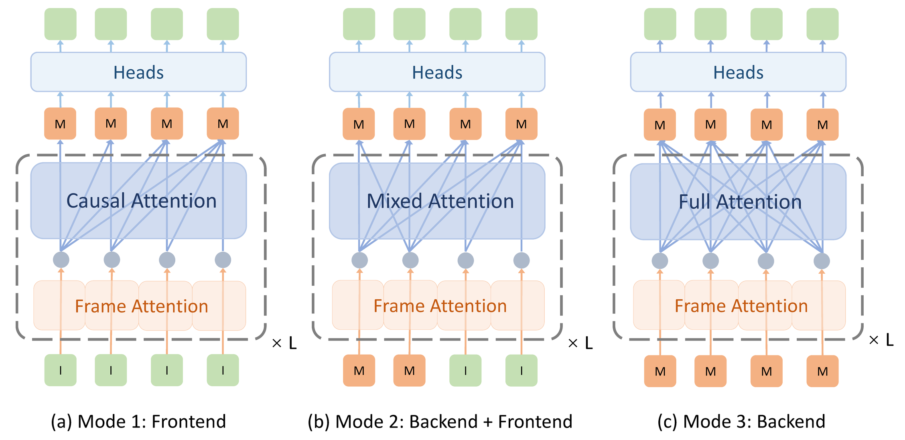
Loss / training detail 보기
논문은 depth, point map, camera pose term을 함께 사용하고, 세 training mode의 loss를 합쳐 frontend-backend cooperation을 학습시킨다.
| 항목 | 역할 | 읽을 때 볼 점 |
|---|---|---|
| \(\mathcal{L}_{\mathrm{depth}}\) | depth gradient와 scale-normalized depth를 맞춤 | dense surface의 local shape 안정화 |
| \(\mathcal{L}_{\mathrm{pmap}}\) | local point map을 metric geometry에 맞춤 | reconstruction 품질과 연결 |
| \(\mathcal{L}_{\mathrm{cam}}\) | relative camera pose를 비교 | trajectory consistency와 연결 |
Evidence: 어떤 결과로 검증했나
평가는 tracking accuracy, reconstruction quality, frontend-backend cooperation, runtime으로 나누어 읽는 것이 자연스럽다. 특히 Table 6은 backend가 들어갔을 때 ATE가 크게 줄어드는지를 직접 보여주기 때문에, 이 논문의 핵심 주장과 가장 맞닿아 있다.
TUM RGB-D, 7-Scenes, Replica에서 RMSE of ATE를 비교한다. SLAM-Former는 calibration 없이도 feed-forward reconstruction 계열과 dense SLAM baseline 대비 낮은 ATE를 보이는 방향으로 정리된다.
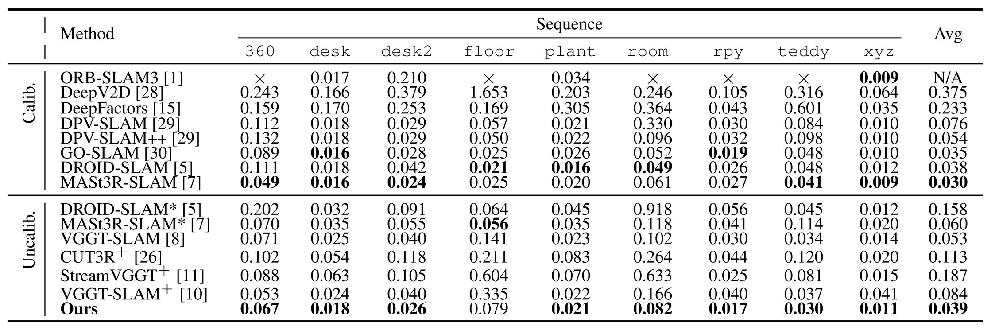
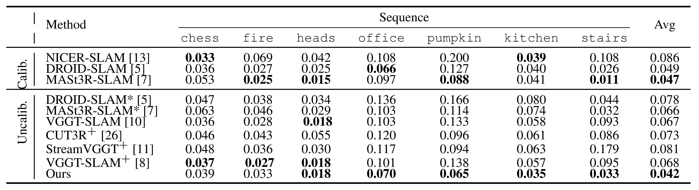
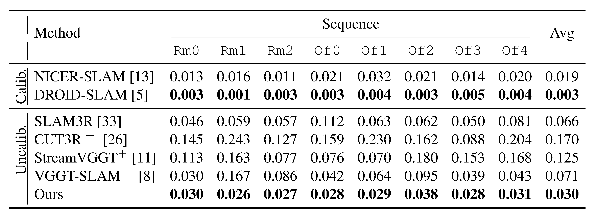
tracking이 좋아도 dense map이 중복되거나 찢어지면 SLAM으로서의 활용성이 떨어진다. 논문은 qualitative reconstruction과 Acc./Comp./Chamfer 계열 metric을 함께 제시해 geometry consistency를 확인한다.
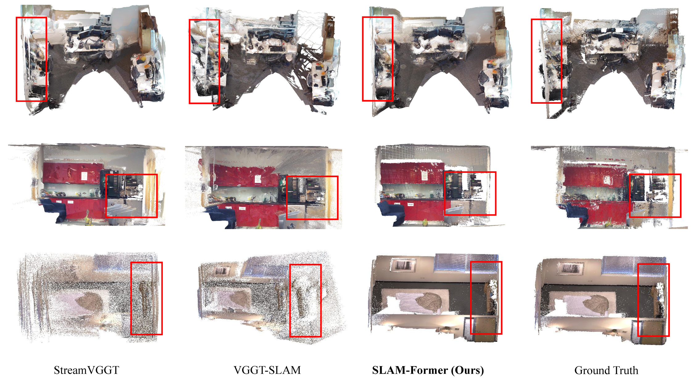
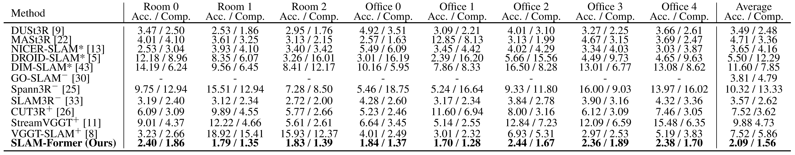
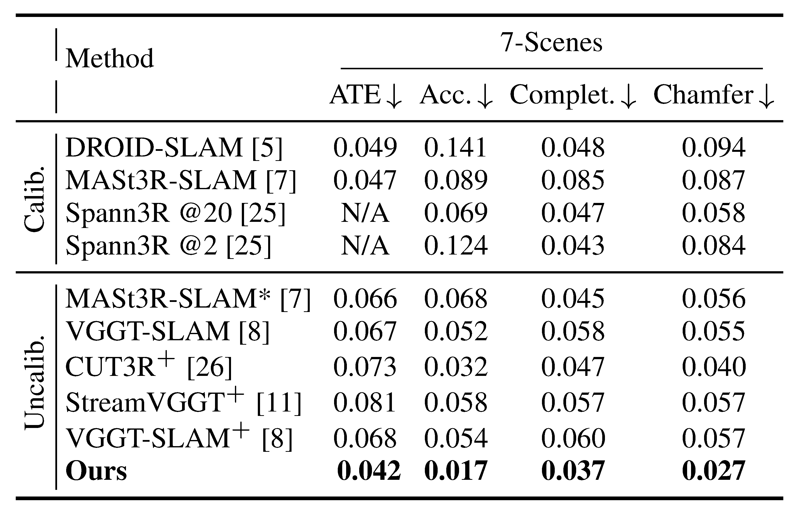
Ablation의 핵심은 frontend만 사용하는 경우와 backend를 추가하는 경우의 차이다. Table 6에서 frontend-only 평균 ATE는 \(0.134\)m이고, middle backend 또는 end backend를 추가하면 약 \(0.039\sim0.042\)m로 감소한다.
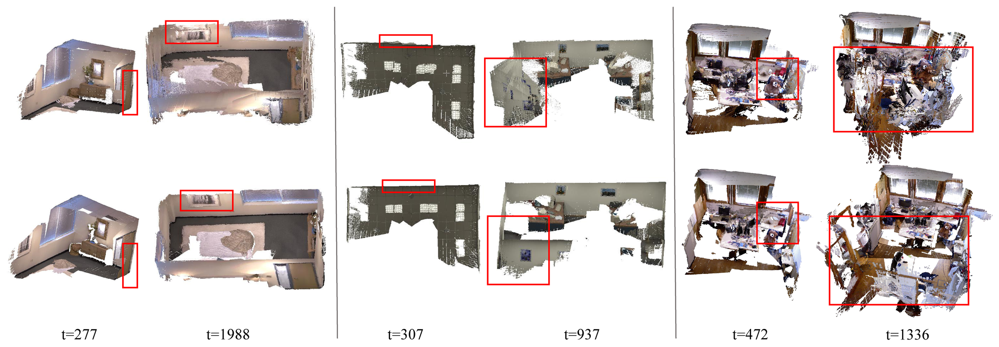
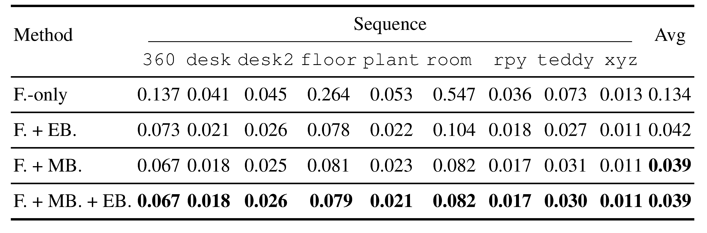
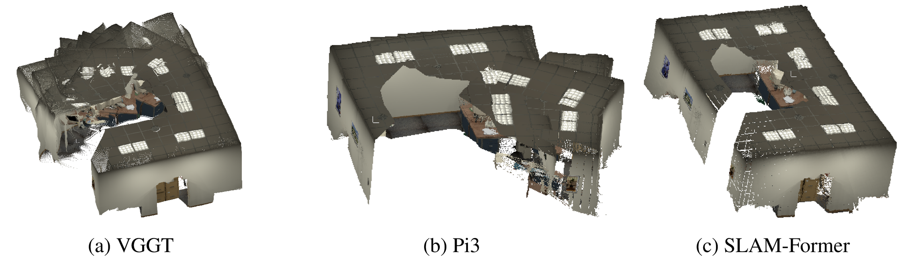
backend full attention은 모든 frame마다 수행하지 않고 keyframe 단위로 간헐적으로 실행된다. 그래서 논문은 TUM RGB-D, 7-Scenes, Replica에서 10Hz 이상 수준의 속도를 보고한다.
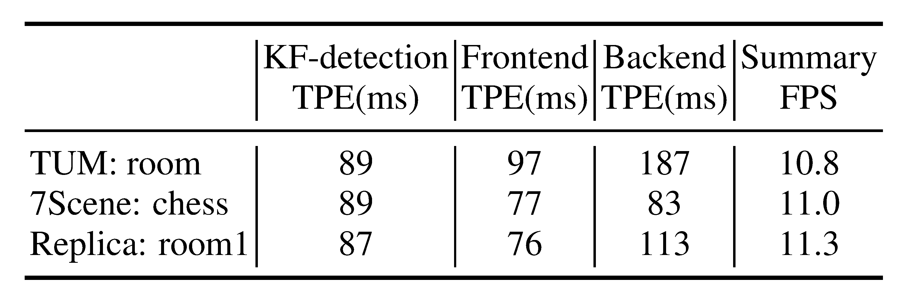
Usage / Limits: 어떤 문제에 잘 맞나
SLAM-Former는 monocular image stream에서 tracking과 dense reconstruction을 동시에 얻고 싶고, global correction을 다음 frame 처리에 반영하고 싶은 상황에 잘 맞는다.
| 잘 맞는 상황 | 주의할 상황 | 이유 |
|---|---|---|
| monocular dense SLAM | 매우 긴 sequence | backend full attention의 \(O(n^2)\) cost 부담 |
| feed-forward 3D prior를 SLAM으로 확장 | 이전 KV cache 유지가 어려운 환경 | local frontend mode 없이 cache 의존 |
| global backend correction이 필요한 mapping | embedded / strict real-time | memory와 compute budget이 작을수록 제약 |
이 논문은 transformer가 SLAM의 모든 기하 추론을 자동으로 해결한다기보다, frontend의 streaming update와 backend의 global correction을 하나의 representation으로 연결하는 방법을 제안한 쪽에 가깝다.
Problem: why put SLAM into one transformer
SLAM-Former starts from the observation that dense monocular SLAM is still often built as a chain of separate modules. Tracking, global optimization, and mapping can each be strong, but errors can propagate through module boundaries.
The paper reframes SLAM as a sequential inference problem over token memory.
Correction is limited by fixed interfaces between modules.
Old states are not naturally revisited in long sequences.
Frontend and backend states circulate through shared cache representations.
Mechanism: how frontend and backend share one transformer
The key design is to run one transformer backbone in two modes. The frontend processes frames sequentially, while the backend periodically refines accumulated map tokens with full attention.
The current frame \(I_t\) is processed conditioned on keyframe cache \(\{C_k\}_{k\in\mathcal{S}}\), producing feature \(F_t\) and cache \(C_t\).
New keyframes are inserted into map-token memory. The backend applies full attention over this memory and writes the refined representation back into the frontend cache.
The shared feature representation feeds local point-map, confidence, and camera-pose heads. Training then combines the geometric objectives with the three operating modes so that frontend prediction, cache sharing, and backend refinement are learned together.
Evidence: how it is evaluated
The experiments are easiest to read through four lenses: tracking accuracy, reconstruction quality, frontend-backend cooperation, and runtime.
Usage / Limits: where it fits
SLAM-Former fits monocular dense SLAM settings where global correction should feed back into future streaming updates.
| Use when | Be careful with | Reason |
|---|---|---|
| Monocular dense SLAM | Very long sequences | Backend full attention has \(O(n^2)\) cost |
| Extending feed-forward 3D priors into SLAM | Unreliable KV-cache persistence | The frontend depends on previous cache states |
| Mapping with periodic global correction | Embedded or strict real-time settings | Memory and compute can become limiting |
The paper is less about making a transformer magically solve all geometry, and more about connecting streaming updates and global correction through one shared representation.